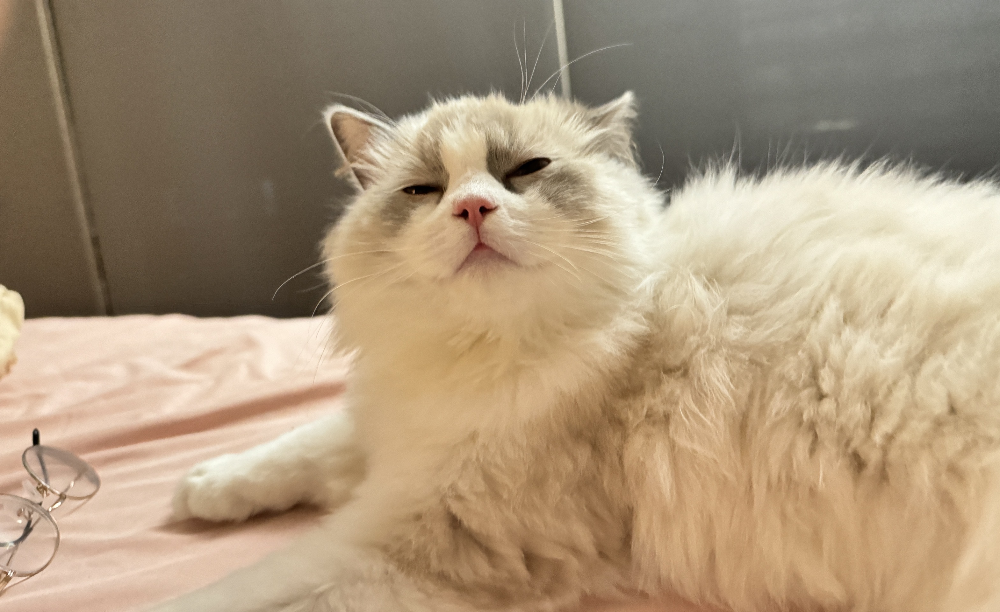

☕️
Research Technician
I am a Research Technician at Syndeio Biosciences at Northwestern, advised by Prof. Jeffery Burgdorf . I obtained a master's degree in Computer Science from Northwestern University. I am now working on data mining, VLM, Bioinformatics. I am also currently working with Prof. Jing Ma at Case Western Reserve University on VLM reasoning and prediction.
Research Experience
Research
Case Western Reserve University | advised by Pro. Jing Ma- VLM reasoning and prediction
Research Technician
Syndeio Biosciences | advised by Pro. Jeffrey Burgdorf- Wearable EEG anomaly detection
-
Next Token Prediction
Northwestern University | advised by Pro. Huiling Hu -
Image Analysis
Zhejiang A&F University | advised by Pro. Jie Yang
Education
-
MS Computer Science
Northwestern University -
BE Computer Science and Technology
Jiyang College of Zhejiang A&F University
Publications
Invoice Recognition and Management Based on Image Analysis[J].
Computer Era,2020(10):4-8. DOI:10.16644/j.cnki.cn33-1094/tp.2020.10.002.
Application Analysis of Management and Big Data Model[J].
Computer Knowledge and Technology,2020,16(13):292-294.
A Method of Network Attack Detection for Separating Noise and Signal[J].
Computer Era,2019(2):1-4,8. DOI:10.16644/j.cnki.cn33-1094/tp.2019.02.001.
Projects

Honors
Zhejiang Provincial Outstanding Graduate
Hobbies
üè∏Ô∏è Play badminton
üé∏ Play Chinese guitar
üê± My cat - Yoyo
